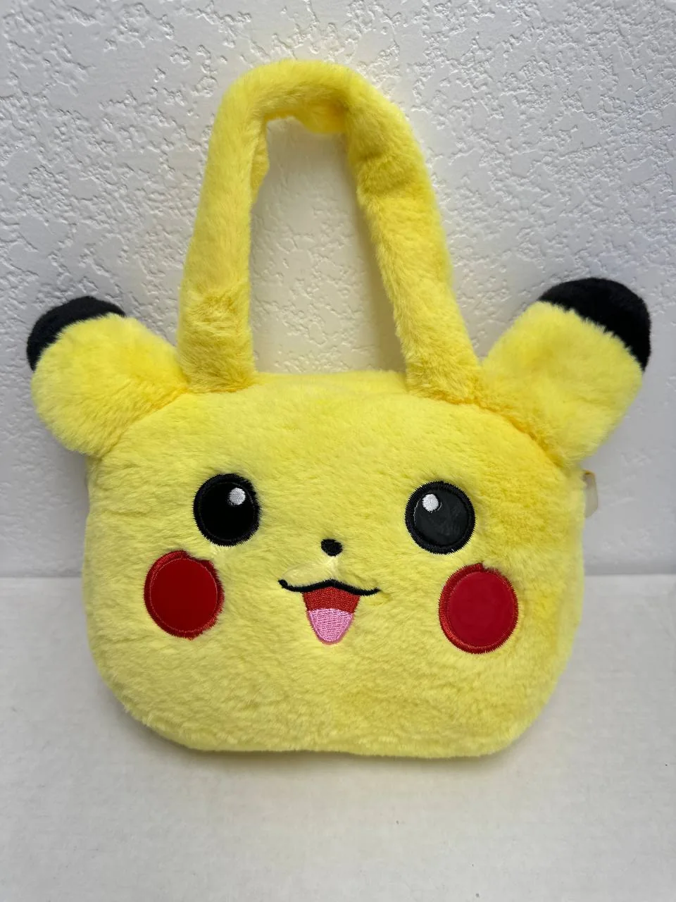

← Back to Cypress Flips

Accessories
Pokemon Pikachu Plush Purse / Mini Bag
$18.00
Website direct local pickup price — marketplace listings may be higher.
Add a playful Pokémon touch to your outfit, collection, or gift lineup with this Pikachu plush-style purse / mini bag. The bright yellow fuzzy exterior, embroidered face, red cheeks, black-tipped ears, and soft handle give it that instantly recognizable Pikachu look while still being functional as a small carry bag. It also includes the Pikachu loop inside as noted, making it a fun little extra for fans.
Condition: Good pre-owned/display condition based on the photo. Compared with a mint-condition bag, there may be light handling wear to the plush fibers from storage or display, but the front presents very well overall. The yellow color is bright, the embroidered facial details look intact, and no major stains, tears, or missing pieces are visible from the provided image. Please note that only one exterior photo is available, so interior/backside condition is not fully shown.
Market pricing for similar Pikachu plush purses and Pokémon tote/bag items varies widely depending on brand, size, and condition, with comparable listings commonly appearing around the low-$20s and some plush purse listings higher. At $20, this is priced as a fair, giftable Pokémon accessory with strong visual appeal.
Condition: Good pre-owned/display condition based on the photo. Compared with a mint-condition bag, there may be light handling wear to the plush fibers from storage or display, but the front presents very well overall. The yellow color is bright, the embroidered facial details look intact, and no major stains, tears, or missing pieces are visible from the provided image. Please note that only one exterior photo is available, so interior/backside condition is not fully shown.
Market pricing for similar Pikachu plush purses and Pokémon tote/bag items varies widely depending on brand, size, and condition, with comparable listings commonly appearing around the low-$20s and some plush purse listings higher. At $20, this is priced as a fair, giftable Pokémon accessory with strong visual appeal.
Local pickup available in Cypress, CA.